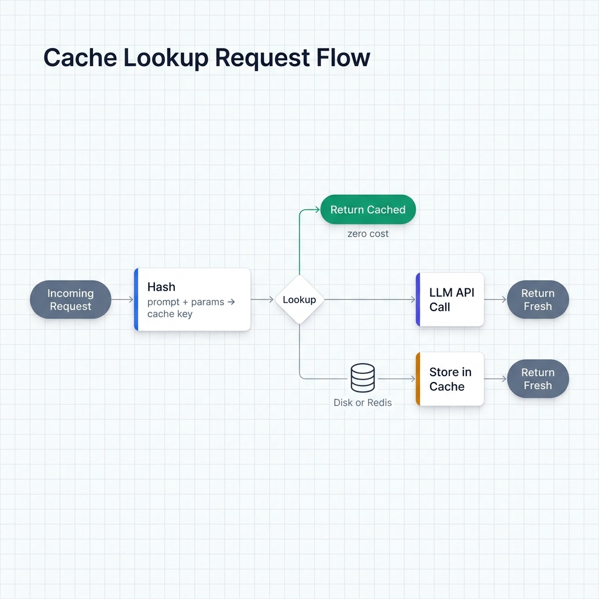
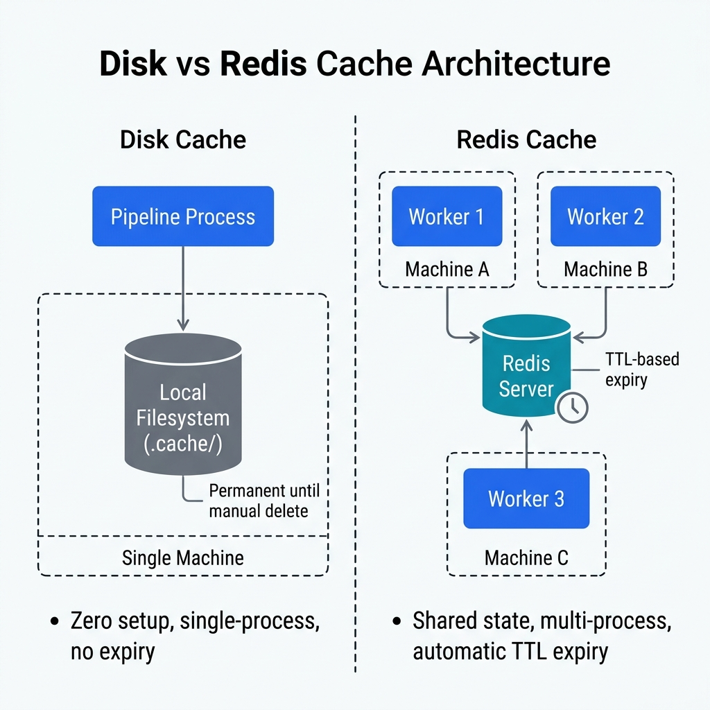

Caching and Rate Limiting¶
Ondine ships two caching backends — disk and Redis — that store LLM responses and replay them on duplicate requests. No API call, no cost. Pair that with rate limiting and you've got fine-grained control over spend and throughput.
How Response Caching Works¶
When you enable caching, Ondine hands a cache config to LiteLLM. LiteLLM hashes every outgoing prompt + parameters, checks the store, and either returns the cached response (zero cost) or calls the API and writes the result for next time.
This is not the same as prefix caching, which is a provider-side optimization for repeated system prompts. Response caching runs on your infrastructure and skips the API call entirely.

Disk Caching¶
with_disk_cache(cache_dir=".cache")¶
Stores responses as files on the local filesystem. No Redis, no setup.
from ondine import PipelineBuilder
pipeline = (
PipelineBuilder.create()
.from_csv("data.csv", input_columns=["text"], output_columns=["summary"])
.with_prompt("Summarize in one sentence: {text}")
.with_llm(provider="openai", model="gpt-4o-mini")
.with_disk_cache()
.build()
)
result = pipeline.execute()
Parameters
| Parameter | Type | Default | Description |
|---|---|---|---|
cache_dir |
str |
".cache" |
Directory to store cache files |
Custom cache location:
When to use disk caching¶
- Dev and testing — rerun the same pipeline while tweaking prompts. After the first pass, you pay nothing.
- Single-machine workloads — no Redis to stand up.
- Reproducibility — cache files stick around between runs, so identical inputs always produce identical outputs.
- Iterative data pipelines — if your input data rarely changes, reprocessing becomes near-instant.
Cost savings example¶
# First run: 1,000 rows × $0.00015/1K tokens ≈ $0.15
# Second run (same inputs): $0.00 — all hits from cache
pipeline = (
PipelineBuilder.create()
.from_csv("products.csv", input_columns=["title"], output_columns=["category"])
.with_prompt("Classify this product title into one category: {title}")
.with_llm(provider="openai", model="gpt-4o-mini")
.with_disk_cache(cache_dir=".cache/product_classification")
.build()
)
# Run once to populate cache
result = pipeline.execute()
print(f"First run cost: ${result.costs.total_cost:.4f}")
# Run again — cache hits, zero cost
result2 = pipeline.execute()
print(f"Second run cost: ${result2.costs.total_cost:.4f}") # $0.0000
Redis Caching¶
with_redis_cache(redis_url="redis://localhost:6379", ttl=3600)¶
Stores responses in Redis with TTL-based expiry. Multiple processes and machines can share the same cache.
from ondine import PipelineBuilder
pipeline = (
PipelineBuilder.create()
.from_csv("data.csv", input_columns=["review"], output_columns=["sentiment"])
.with_prompt("Classify sentiment as positive, negative, or neutral: {review}")
.with_llm(provider="openai", model="gpt-4o-mini")
.with_redis_cache(redis_url="redis://localhost:6379", ttl=3600)
.build()
)
result = pipeline.execute()
Parameters
| Parameter | Type | Default | Description |
|---|---|---|---|
redis_url |
str |
"redis://localhost:6379" |
Redis connection URL |
ttl |
int |
3600 |
Cache TTL in seconds (1 hour) |
When to use Redis caching¶
- Multiple workers or processes — disk cache lives on one machine. Redis is shared.
- Production — TTL handles expiry for you, so stale data ages out automatically.
- High throughput — Redis handles concurrent reads/writes without file locking headaches.
- Router setups — when you're using
with_router()across providers, Redis makes sure a cached response gets reused no matter which provider would've handled the request.
TTL configuration¶
Pick a TTL based on how fast your inputs change:
# Short TTL — data changes daily (e.g., news classification)
.with_redis_cache(ttl=86400) # 24 hours
# Long TTL — stable reference data (e.g., product taxonomy)
.with_redis_cache(ttl=604800) # 7 days
# Minimum TTL — for testing or debugging only
.with_redis_cache(ttl=300) # 5 minutes
Production example with remote Redis¶
import os
from ondine import PipelineBuilder
REDIS_URL = os.getenv("REDIS_URL", "redis://redis-host:6379")
pipeline = (
PipelineBuilder.create()
.from_csv("support_tickets.csv",
input_columns=["ticket_text"],
output_columns=["category", "priority"])
.with_prompt("Categorize this support ticket: {ticket_text}")
.with_llm(provider="openai", model="gpt-4o-mini")
.with_redis_cache(redis_url=REDIS_URL, ttl=43200) # 12 hours
.build()
)
Disk vs Redis: Choosing a Backend¶
| Consideration | Disk | Redis |
|---|---|---|
| Setup | None | Redis server required |
| Multi-process | No | Yes |
| TTL / expiry | No | Yes |
| Best for | Local development | Production, distributed |
| Persistence | Permanent (manual cleanup) | Configurable via TTL |

Disk when you're working locally and want zero-infrastructure caching that sticks around forever.
Redis when you're running pipelines in parallel, across machines, or need entries to expire on their own.
Cache Invalidation¶
Here's the thing: neither backend auto-invalidates when you change your prompt. If you update the prompt template, old cached responses still come back for the same input values.
Disk cache: delete or rename the cache directory.
import shutil
shutil.rmtree(".cache") # Clear entire cache
# or
shutil.rmtree(".cache/product_classification") # Clear specific run
Redis cache: flush the keys or wait for TTL expiry. Full flush during dev:
import redis
r = redis.from_url("redis://localhost:6379")
r.flushdb() # Clears all keys in the current database
To dodge stale responses after a prompt change, use a namespaced cache directory for disk or a dedicated Redis database per pipeline version.
Rate Limiting¶
with_rate_limit(rpm)¶
Throttles outgoing API requests with a token bucket. Set this below your provider's stated limit so you don't eat 429s.
from ondine import PipelineBuilder
pipeline = (
PipelineBuilder.create()
.from_csv("data.csv", input_columns=["text"], output_columns=["result"])
.with_prompt("Classify: {text}")
.with_llm(provider="openai", model="gpt-4o-mini")
.with_rate_limit(50) # 50 requests per minute
.build()
)
Parameters
| Parameter | Type | Description |
|---|---|---|
rpm |
int |
Maximum requests per minute |
One catch: rate limiting is per pipeline execution, not global across processes.
Typical rate limits by provider tier¶
| Provider / tier | Actual limit | Recommended rpm |
|---|---|---|
| OpenAI free | 3 RPM | 2 |
| OpenAI Tier 1 | 500 RPM | 450 |
| Groq free | 30 RPM | 25 |
| Groq paid | 6,000 RPM | 5,000 |
| Anthropic Tier 1 | 50 RPM | 45 |
Set rpm about 10-20% below the real limit. That leaves headroom for retries and burst traffic from other processes.
Rate limiting alongside concurrency¶
with_rate_limit() and with_concurrency() do different things. Concurrency caps how many requests are in flight at once; rate limiting caps how many get dispatched per minute.
pipeline = (
PipelineBuilder.create()
.from_csv("data.csv", input_columns=["text"], output_columns=["label"])
.with_prompt("Label: {text}")
.with_llm(provider="groq", model="llama-3.3-70b-versatile")
.with_concurrency(10) # Up to 10 simultaneous requests
.with_rate_limit(25) # But no more than 25 per minute total
.build()
)
Combining Caching and Rate Limiting¶
All three compose freely:
from ondine import PipelineBuilder
pipeline = (
PipelineBuilder.create()
.from_csv("reviews.csv", input_columns=["review"], output_columns=["sentiment"])
.with_prompt("Review: {review}\nSentiment:")
.with_system_prompt("Classify as positive, negative, or neutral. Return only the label.")
.with_llm(provider="openai", model="gpt-4o-mini")
.with_redis_cache(redis_url="redis://localhost:6379", ttl=86400)
.with_rate_limit(50)
.with_concurrency(10)
.build()
)
result = pipeline.execute()
print(f"Total cost: ${result.costs.total_cost:.4f}")
print(f"Total tokens: {result.costs.total_tokens:,}")
Cache hits bypass rate limiting entirely — no API call means no throttle. So for repeated data, your effective throughput is unlimited by the rate limit.
Related¶
- Cost Control — prefix caching, budget limits, and token optimization
- Routing — load balancing and failover across multiple providers
- Execution Modes — concurrency and streaming configuration